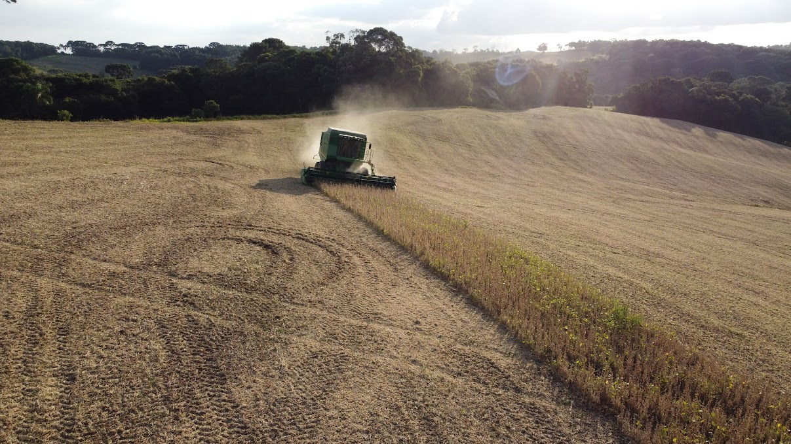
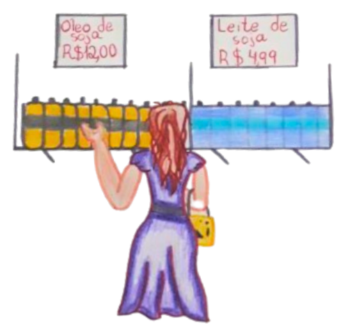

A produção agrícola do Paraná desempenha um papel fundamental na economia do estado e do Brasil, trazendo inúmeros impactos positivos tanto no setor econômico quanto social. Uma das principais contribuições é a geração de empregos. Com a implementação de tecnologias modernas e práticas agrícolas sustentáveis, o setor agrícola tem absorvido uma grande quantidade de mão de obra, desde trabalhadores rurais até profissionais especializados em agronomia e tecnologia agrícola. Isso tem reduzido o desemprego e aumentando a qualidade de vida nas regiões rurais do estado.
Além disso, o Paraná é um dos maiores produtores de grãos do país, com destaque para a soja, o milho e o trigo. Essa vasta produção não só abastece o mercado interno, garantindo a segurança alimentar, mas também fortalece a balança comercial através da exportação desses produtos. A receita gerada pelas exportações agrícolas contribui significativamente para o PIB do estado e do Brasil, contribuindo com o desenvolvimento econômico e possibilitando investimentos em infraestrutura, educação e saúde.
Outro impacto positivo notável é o incentivo à sustentabilidade. O Paraná tem se
destacado na adoção de práticas agrícolas que minimizem os impactos ambientais, como o plantio direto na palha, rotação de culturas e uso de biofertilizantes. Essas práticas ajudam a preservar a fertilidade do solo, reduzir a erosão e conservar a biodiversidade. Além disso, o estado tem investido em pesquisa e desenvolvimento para melhorar a eficiência e a sustentabilidade da produção agrícola, promovendo um modelo de agricultura que beneficia tanto as gerações presentes quanto as futuras.
No geral, a produção agrícola do Paraná é uma força motora para a economia, a geração de empregos e a promoção da sustentabilidade. Seu impacto positivo se estende além das fronteiras do estado, contribuindo significativamente para o desenvolvimento sustentável do Brasil como um todo.
A soja é uma das culturas mais importantes do mundo, desempenhando um papel crucial na alimentação humana e animal, além de ser utilizada em diversos produtos industriais. O trajeto da soja, desde a plantação até a mesa do consumidor, envolve várias etapas detalhadas que garantem a qualidade e a segurança do produto final.
A jornada da soja começa com a preparação do solo, que deve ser arado e fertilizado adequadamente. As sementes de soja são então plantadas, geralmente em fileiras, utilizando maquinário agrícola especializado. A época de plantio varia de acordo com a região e o clima, mas geralmente ocorre na primavera. Durante o crescimento, a soja necessita de cuidados constantes, incluindo irrigação, controle de pragas e doenças, e monitoramento do desenvolvimento das plantas.
A colheita da soja geralmente ocorre no final do verão ou início do outono, quando as plantas atingem a maturidade e as vagens secam. A colheita é realizada com colheitadeiras, máquinas que cortam as plantas e separam os grãos das vagens. Após a colheita, os grãos de soja são transportados para silos onde são limpos, secos e armazenados adequadamente para prevenir a deterioração.
Os grãos de soja são então enviados para plantas de processamento, onde são transformados em diversos produtos, como óleo de soja, farelo de soja e proteína de soja texturizada. O processamento envolve etapas como a trituração, a extração do óleo e a moagem do farelo. Depois de processados, os produtos derivados da soja são embalados e transportados para distribuidores, supermercados e indústrias alimentícias.
Finalmente, os produtos à base de soja chegam às prateleiras dos supermercados ou são utilizados como ingredientes em alimentos industrializados, como tofu, leite de soja e diversos produtos veganos. Na mesa do consumidor, a soja pode aparecer de diversas formas, desde um simples óleo para cozinhar até sofisticadas alternativas proteicas. O consumo da soja oferece benefícios nutricionais significativos, incluindo proteínas, vitaminas e minerais essenciais.
Assim, do campo ao prato, a soja passa por um processo complexo que envolve agricultores, processadores, distribuidores e, finalmente, consumidores, todos desempenhando um papel crucial para garantir que este valioso recurso chegue em perfeitas condições à mesa das famílias.